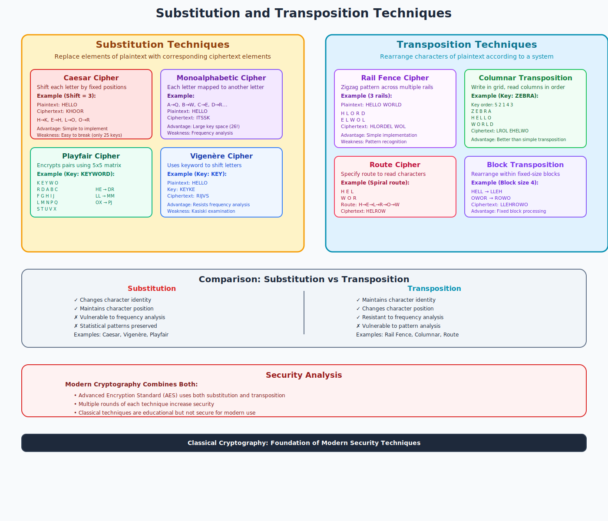

Substitution and Transposition Techniques
Classical Cryptographic Methods
Foundation of Modern Encryption

Classical Cryptography Overview
Classical Cryptography: Traditional encryption methods that rely on manual processes and simple mathematical operations to transform plaintext into ciphertext.
Two Main Categories:
- Substitution Techniques: Replace characters with other characters
- Transposition Techniques: Rearrange character positions
Historical Importance: These techniques form the foundation of modern cryptographic principles
Substitution Techniques
Definition: Cryptographic method where each character in the plaintext is replaced with another character according to a predetermined rule or key.
Key Characteristics:
- Maintains character positions
- Changes character values
- Preserves text length
- Uses substitution tables or algorithms
Types of Substitution Ciphers
Monoalphabetic:
- Single substitution alphabet
- Each letter maps to one other letter
- Example: Caesar cipher
Polyalphabetic:
- Multiple substitution alphabets
- Same letter can map to different letters
- Example: Vigenère cipher
Simple Substitution Example
Substitution Table:
Plaintext: A B C D E F G H I J K L M N O P Q R S T U V W X Y Z
Ciphertext: D E F G H I J K L M N O P Q R S T U V W X Y Z A B C
Encryption Process:
Plaintext: "HELLO WORLD"
Ciphertext: "KHOOR ZRUOG"
H → K, E → H, L → O, L → O, O → R
W → Z, O → R, R → U, L → O, D → G
Caesar Cipher - Most Famous Substitution
Caesar Cipher: A simple substitution cipher where each letter is shifted by a fixed number of positions in the alphabet.
Key Features:
- Shift Value: Number of positions to move (0-25)
- Wrap Around: Z shifts to A, B, C...
- Historical Use: Used by Julius Caesar (shift of 3)
- Symmetric: Same key for encryption and decryption
Caesar Cipher Example
Shift = 3 (Caesar's original)
Alphabet: A B C D E F G H I J K L M N O P Q R S T U V W X Y Z
Shifted: D E F G H I J K L M N O P Q R S T U V W X Y Z A B C
Encryption:
Plaintext: "ATTACK AT DAWN"
Ciphertext: "DWWDFN DW GDZQ"
Decryption:
Shift back by 3 positions
D → A, W → T, W → T, etc.
Substitution Cipher Analysis
Strengths:
- Simple to implement
- Fast encryption/decryption
- No special equipment needed
- Maintains text structure
Weaknesses:
- Frequency analysis attacks
- Pattern recognition
- Small key space (26 for Caesar)
- Vulnerable to brute force
Transposition Techniques
Definition: Cryptographic method where the characters of the plaintext are rearranged according to a specific system or key, without changing the actual characters.
Key Characteristics:
- Preserves original characters
- Changes character positions
- Maintains text length
- Uses permutation patterns
Types of Transposition Ciphers
- Simple Columnar: Write in rows, read in columns
- Keyed Columnar: Columns reordered by keyword
- Route Cipher: Follow specific path through grid
- Rail Fence: Write in zigzag pattern
- Block Transposition: Rearrange fixed-size blocks
Simple Columnar Transposition
Example: "ATTACK AT DAWN"
Step 1: Remove spaces → "ATTACKATDAWN"
Step 2: Write in 4-column grid:
A T T A
C K A T
D A W N
Step 3: Read columns top to bottom:
Column 1: A C D → "ACD"
Column 2: T K A → "TKA"
Column 3: T A W → "TAW"
Column 4: A T N → "ATN"
Ciphertext: "ACDTKATWATN"
Keyed Columnar Transposition
Key: "ZEBRA" → Column order: 5,2,1,4,3
Step 1: Write plaintext in grid under keyword:
Z E B R A
5 2 1 4 3
----------
A T T A C
K A T D A
W N X X X
Step 2: Read columns in key order (1,2,3,4,5):
Column B(1): T T X → "TTX"
Column E(2): T A N → "TAN"
Column A(3): C A X → "CAX"
Column R(4): A D X → "ADX"
Column Z(5): A K W → "AKW"
Ciphertext: "TTXTANCAXADXAKW"
Rail Fence Cipher
Message: "ATTACKATDAWN" with 3 rails
Step 1: Write in zigzag pattern:
A A A N
T T C T D W
A K A
Step 2: Read each rail left to right:
Rail 1: A A A N → "AAAN"
Rail 2: T T C T D W → "TTCTDW"
Rail 3: A K A → "AKA"
Ciphertext: "AAANTTCTDWAKA"
Transposition Cipher Analysis
Strengths:
- Preserves letter frequency
- Resistant to frequency analysis
- Simple to implement manually
- Can be very secure with long keys
Weaknesses:
- Anagram detection possible
- Pattern analysis attacks
- Vulnerable to known plaintext
- Limited by manual constraints
Substitution vs Transposition
| Aspect |
Substitution |
Transposition |
| Characters |
Changes character values |
Preserves character values |
| Positions |
Maintains positions |
Changes positions |
| Frequency |
Preserves frequency |
Preserves frequency |
| Vulnerability |
Frequency analysis |
Anagram analysis |
| Key Management |
Substitution table |
Permutation pattern |
Product Ciphers
Product Cipher: Combination of substitution and transposition techniques applied in sequence to achieve greater security.
Advantages of Combination:
- Enhanced Security: Compensates for individual weaknesses
- Diffusion: Spreads plaintext influence across ciphertext
- Confusion: Makes relationship between key and ciphertext complex
- Modern Foundation: Basis for advanced encryption standards
Breaking Classical Ciphers
Common Attack Methods:
- Frequency Analysis: Statistical analysis of character occurrence
- Pattern Recognition: Identifying repeated sequences
- Brute Force: Trying all possible keys
- Known Plaintext: Using known text-ciphertext pairs
- Dictionary Attacks: Testing common words and phrases
Reality: Most classical ciphers can be broken with modern computing power and techniques
Modern Relevance
Educational Value:
- Foundation Concepts: Teaches basic cryptographic principles
- Algorithm Design: Understanding diffusion and confusion
- Security Analysis: Learning attack methodologies
- Historical Context: Evolution of cryptographic thought
Modern Usage: While not secure alone, these concepts are building blocks of contemporary encryption algorithms like AES and DES
Implementation Guidelines
For Substitution:
- Use large, random substitution tables
- Implement polyalphabetic variations
- Consider null characters and padding
- Avoid predictable patterns
For Transposition:
- Use complex, irregular patterns
- Vary block sizes dynamically
- Implement multiple rounds
- Use key-dependent permutations
Key Takeaways
- Substitution changes characters, transposition changes positions
- Both preserve character frequency, making them vulnerable
- Classical ciphers teach fundamental cryptographic concepts
- Product ciphers combine both techniques for better security
- Modern encryption uses these principles in sophisticated ways
- Understanding attacks helps design better defenses
Remember: These techniques are historical foundations - modern cryptography requires much more sophisticated approaches
Thank You
Questions & Discussion
Next: Caesar Cipher Deep Dive